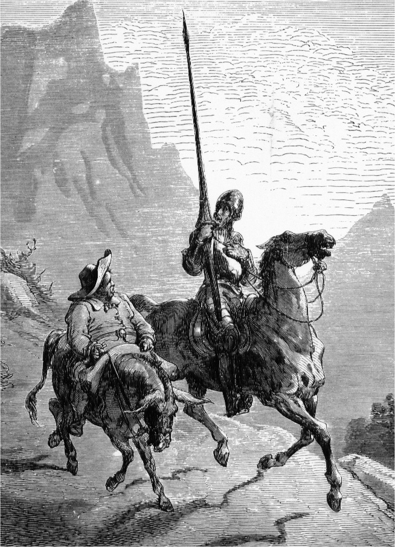
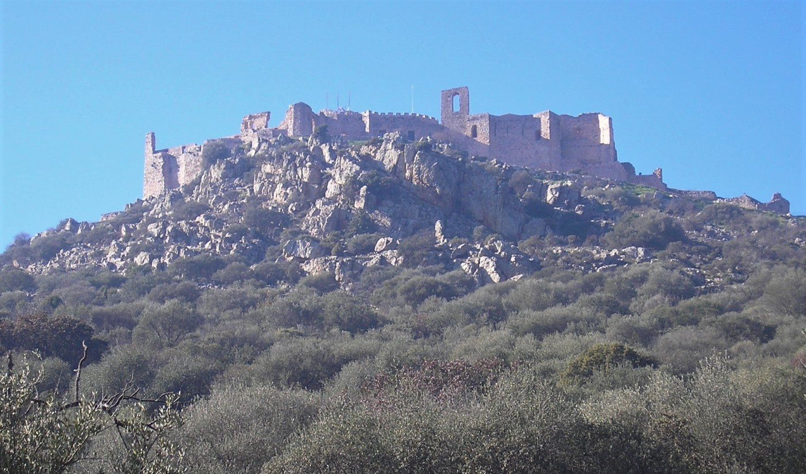
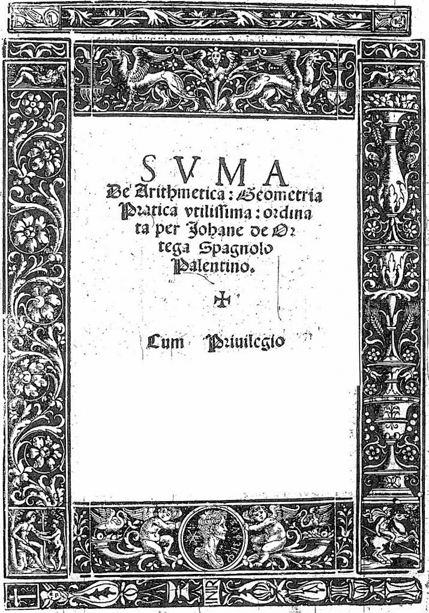
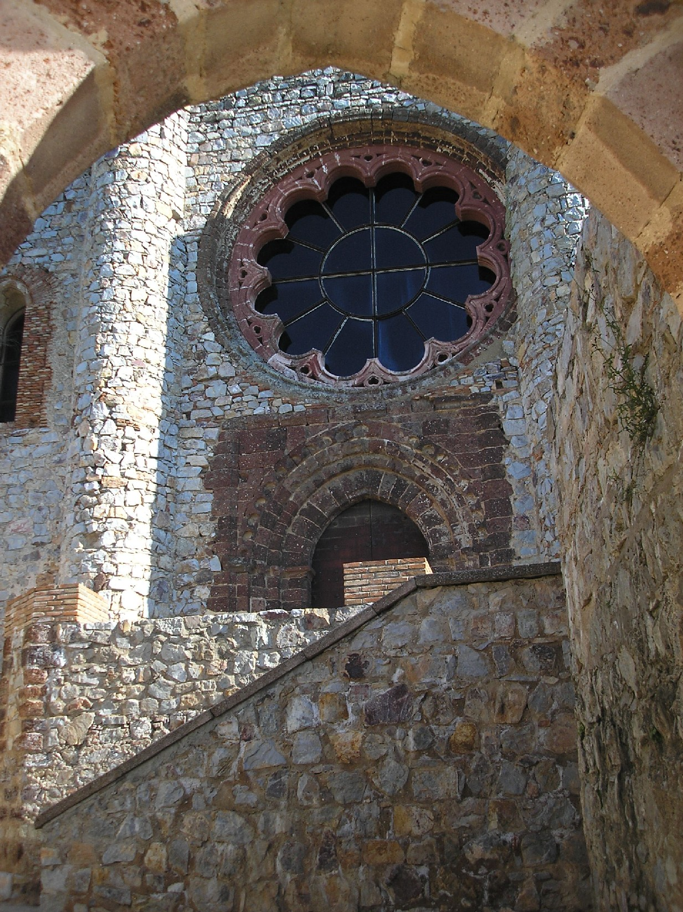

Dear reader,
It is with great pleasure that we publish here, and for the first time ever in print, a new chapter of the great adventures of Don Quijote of La Mancha, that until today, had not seen the light of day. As it is well known, the celebrated writer Don Miguel de Cervantes Saavedra compiled in two volumes the most curious story of Don Quijote from two sources: records found in the archives of La Mancha and, primarily, a translation of an old Arab manuscript by Cide Hamete Benengeli. Since the publication in the year 1615 of the second part of the escapades of the famous knight, there was no indication of the existence of any other writings about Don Quijote, until today. As it has been reported, an American collector of art and historical artifacts, who specializes in items of a scientific or mathematical nature, recently acquired in the black market (at a great cost) an unusual manuscript in the Arab language that, at first sight, seemed to detail the life and works of a great medieval mathematician. To our great delight, a team of experts, upon a meticulous translation, have confirmed that the text is indeed a lost chapter of Quijote’s adventures, recorded by no other than Benengeli himself. The reader should be reassured that recent fake news that have circulated in social media are completely and categorically untrue: the chapter we offer here was not part of Avellaneda’s spurious and apocryphal book on the adventures of Don Quijote, and we are ready to publish a facsimile of the original Arab manuscript as proof, if absolutely necessary, though the experts recommend that the fragile document should not be photographed to avoid farther damage to its current delicate quality.
As the careful reader will no doubt infer, the lost chapter must have taken place during Quijote’s second sortie, sometime after he acquired Mambrino’s helmet and freed the galley slaves, but before Sancho and Quijote wandered into Sierra Morena, and met Cardenio. Regardless of the timeline, this adventure may be one of the most singular and peculiar of the knight’s episodes, and we are all the richer to have found it and add it to our collections. Without further ado, we present the missing chapter, in its entirety.
THE MISSING CHAPTER
Of the unmatched intellect of Don Quijote and what happened when he visited the Castle of Calatrava, where he presented a new mathematical theory in honor of his famous lady, Dulcinea of El Toboso.
Quijote and Sancho were idly riding their mounts, lamenting their misfortune, and still recounting the many bones that might be broken after being showered with countless stones by Ginés de Pasamonte and his fellow galley slaves. Without the intervention of their masters, the beasts, Rocinante and Sancho’s ass, took the knight and squire off road and, at a leisurely pace, walked on the fields of La Mancha for quite some time.
“Where are we going next, your Excellency?” eventually inquired Panza.
“Only God knows, Sancho! Our horses know the way to those places where my strength and valor are needed. So be patient for once my friend, and let the beasts guide us, for they know better than we do,” replied Quijote with sadness in his voice, as he was still grieving the great damage that Mambrino’s helmet had suffered under the rain of stones.
Neither Rocinante nor the donkey were in a hurry to go anywhere, so they took their sweet time, walking in circles for the longest time, feeding on any dry grass they found along the way, before they decided to go South by Southwest.

“Look Master, isn’t that the Castle of Calatrava over the hill?” asked Sancho.
“Oh Sancho, you are as blind as you are a coward! Your geography must be all rusted. Can it be true that you do not recognize the knowledge that impregnates these walls that we now approach? This is not Calatrava, but the famous University of Salamanca!” cried Quijote.
“Salamanca? Can’t be, unless they moved it stone by stone to La Mancha.”
“Don’t you see Sancho, we have been transported by my enemy Friston the Magician to the very doors of the city of Salamanca! This is no doubt a new test of my admirable skills. The arm of a knight must be strong enough to defeat giants, but the true knight is also knowledgeable and cultured, and I must visit here to show all the professors of Salamanca that I am as enlightened as the King Alfonso IX, if not more,” Quijote said with a wide smile, clearly already forgetting about the helmet and the many broken bones.
“That all may be, if Fresón decided to enchant us so be it, but this castle is for sure the one in Calatrava, and that is the convent and cathedral of the same name right there, your Worshipfulness,” Sancho said sheepishly, for he knew that Quijote was quick to anger when contradicted. The knight, however, dismissed his squire’s observation and continued his discourse.
“Undoubtedly, the professors and even the Dean must have heard of my most famous mathematical theories, and they must be thrilled and awaiting to hear me explain my most profound research in all glory of detail.”
“Math? Is that so? I didn’t know that your excellency could fight numbers as well as thieves!” replied Sancho, truly surprised.
“Your ignorance knows no bounds, Sancho, so please be quiet while I put my thoughts in order,” and Quijote grew quiet and pensive while they slowly rode their animals towards the main gate of the castle.
At this juncture, we should perhaps recall that after Quijote’s first sortie, his compatriots and family, the curate and the barber of his hometown, his niece and housekeeper, after recognizing that Don Alonso Quijano had lost his mind reading too many chivalry books, took it upon themselves to throw away most of the volumes in the library that had made him sick with illusions of grandeur. However, a grave mistake occurred during the book cleanse, for they did not pay attention to the mathematics and physics treaties that Quijano kept safely in a separate shelf. When he recovered from the injuries that resulted from his first sortie, and imagined that Friston the Magician had taken his books about princesses and knights, he rejoiced to see his mathematics collection intact, and spent a good deal of time studying these texts. This enterprise had the very ill effect of confusing his head even further and make him believe that he was a great mathematician like those of old. If chivalry books were a danger to Quijano, the curate should have realized that mathematics books were an equal or greater threat, as Saint Augustine of Hippo has already warned us: “the good Christian should beware of mathematicians. The danger already exists that mathematicians have made a covenant with the devil to darken the spirit and confine man in the bonds of Hell.”

As they approached the Castle of Calatrava, Don Quijote explained to Panza that “my lovely Dulcinea, spring flower of beauty and modesty, will be extremely pleased when I obtain my most deserved doctorate title today from the illustrious faculty at the University of Salamanca, my friend. Finally, I will be able to explain to the professors that here can hardly await, and perhaps to the King himself, the many theorems and corollaries that I have proved in my career, and many more that I would have proved if I did not have to fight the giants and enemies that assault me at every turn.”
“All I know, your Sire, is that one and one is two, and if I eat my two apples none are left,” replied Sancho.
“My dear Squire, you will need to be instructed in the Mathematics arts, if you are ever going to be a fair and successful governor of the island that I have promised as your reward for your valiant services at my side,” offered Quijote.
“By God, no, I beg you, don’t make me learn a single bit of math. My wife Juana doesn’t trust a single number larger than two, my Lord, not even three, and you would do well to distrust all the magicians that play tricks on us with their equations. Let the Devil try to confuse us with his numbers, but I won’t pay attention to none of them.”
Quijote knocked Sancho on the head with his lance, and said “you are a brute and an ignorant peasant that knows not a single atom of the power and richness of Mathematics. Pay attention, and I will teach you, for I have defeated my most powerful enemies thanks to the depth of my knowledge, the power of my theories, and the strength of my arm, do not doubt it. You would do well to learn from the great Greeks of old, and the new Roman school.”
“Your majesty, I don’t know a word of Greek, and my Latin is omnino defunctum.”
“Sancho, I will teach you the classic dialects, but do not fret, for Mathematics is a universal language that everyone understands and easily recognizes just as if it were their mother tongue,” explained Quijote.
“My mother, rest in peace, sure had a tongue on her: she could speak much better Latin than the Archbishop when she was mad at us. And by that I mean always.”
Quijote disregarded his squire’s comment, stopped Rocinante, and looking at the sky with great solemnity, began to think out loud. “Ah Sancho, I envy you! When you start reading the “Arithmetica” of Diophantus of Alexandria for the first time, your simple mind will discover the immense beauty of the numbers! And from the hand of Euclid, also a son of that great Alexandria, and his “Elements” you will learn all the fundamentals of Geometry you ought to know. Logic, that you need more than anyone, you will gain from reading Aristotle’s “Topics,” naturally. The predilect son of Syracuse, the great Archimedes, will teach you all the Physics you shall need as Governor of your island.”
Sancho interrupted “your worship, if I have to read at all to be Governor, then we might have to find a priest that can read for me, so that I can rule, and eat and drink, and not have to worry about all those Greeks you speak of.”
Quijote did not hear or, rather, did not want to hear what Sancho had to say on this topic, and continued his monologue. “Then, you shall continue your training with the texts of Maese Gerolamo Cardano, the Pavian lord and master of the equations. Do not forget to study our famous compatriot’s book, Ortega’s “Most refined treatise on arithmetic and geometry,” as it is a prime example of the many applications that Mathematics has to commerce. And on that topics, you must be well-versed in techniques of the “Liber Abaci” of Master Leonardo Bigollo, also known as Fibonacci, so that you can admire the true power of the Hindu-Arabic numerals…”
“Good God, the Holy Brotherhood will surely hang us if they catch us speaking in Arab, your lordship,” exclaimed Sancho.
Stunned by the simplicity of his squire, Quijote lost his train of thought, and once again he bumped Sancho’s head with his lance. Angry, he dug the spurs on Rocinante’s side, and continued towards the castle, while berating Sancho for his ignorance.

Knight and squire kept bickering until they reached the stables. They dismounted, and left Rocinante and the donkey with some boy that offered to feed the animals some hay. Sancho and Quijote approached a monk that was leaving the convent, and Quijote asked “esteemed professor, where can I find the Dean?” The monk, perplexed by Don Quijote’s attire, took a few seconds to respond “do you mean the Deacon? He is away. He went to Almagro and will not be back until Tuesday, sir.”
“News of my visit must have spread ahead of my arrival, and surely the Dean has gone to notify the King and the entire royal court to come here to learn about and celebrate my most valuable scientific accomplishments,” Quijote said to Sancho, while the monk, speechless, could not imagine what the knight was possibly talking about.
Quijote walked towards the entrance of the church, and said “look Sancho, this is the residence of the mathematicians in this remarkable university. Here we shall find the most noble and persistent minds of all of Salamanca.”
“Take heed my master that I think it is the Cathedral of this Castle, and the monks, if they are Benedictines and heard what we did to their brothers that traveled with the Biscayan, are going to break our bones,” warned Sancho.
“Nonsense, as always. Enter and sit, and listen to what will be my most famous lecture” and Quijote walked into the church, while Sancho found the last bench in the nave. A mass was in progress, and the congregation was quiet, head down and praying, while a priest was at the altar, preparing the gifts. The clanking of Quijote’s spurs and armor was tremendously loud and the stone walls of the church amplified the noise, so much so that the entire audience turned to see who was disturbing their peace. Quijote grew emboldened when he saw that the audience members were gasping, imagining that they were extremely surprised and pleased to see an scholar of his fame join their ranks. The priest was speechless, and simply stared in confusion as Quijote climbed onto the lectern, pushing the pater out of the way. “Should we wait for the Dean and the King?” Quijote asked the priest in a whisper, and the priest replied “…the King, sir?” so Quijote proceeded with his speech, agreeing that it was best to begin, and he would start over when his Majesty, or the Dean, arrived.

“My dearest brothers, I am delighted to accept your invitation to speak at this most recognized and prestigious university. Most people know me as Don Quijote of La Mancha, killer of giants, protector of the people, and terror of mages, but you, my dearest friends, undoubtedly recognize me as a renowned scholar and the most famous mathematician that this Kingdom has ever seen. I am honored to finally be able to explain my theories to the most brilliant minds of our lands, so that history can be written explaining how Don Quijote was not only strong like Cratus, but also as intelligent as Coeus. Certainly, my most important theorem shall be known as Quijote’s Theorem after this day, and it will be taught in schools for the rest of time, even before pupils learn those basic ones by Pythagoras and Thales.”
After these strange words, the priest, monks and the rest of the congregation in the audience looked around and murmured at each other, trying to understand what was happening. Everyone grew quiet, though, when Quijote continued.
“Following on the footsteps of the great Copernicus, I have already proved myself an astronomer that will be remembered in the histories of the natural philosophy, as I have corresponded with Lord Kepler himself, and even exchanged a letter or two with Master Galileo, and described to both my theories that explain the movements of the celestial objects. In summary, Ptolemy was correct. However, I am not here today to talk about the stars but to discuss my most advanced mathematical theories of the numbers and geometry.”
A loud snore was heard from the back row, as Sancho had already fallen asleep, before the lecture even started. Luckily for the squire, Quijote could not tell who was the enemy that snored in the hall, but he swore to himself that for the sake of the honor of his lady Dulcinea and his own, he would later find the irreverent foe that was attempting to humiliate him. Trying to pay no attention to the loud noise that echoed throughout the church, the mathematical discourse began in earnest. “Let us begin with some trivialities. Suppose we have a straightedge and a compass, and an equation of the second degree is given with three unknowns, namely the area, perimeter, and length of the hypotenuse of the right triangle that arises as a section of a pentagon that is inscribed in a circle…”
Quijote moved his hands wildly in the air as he was trying to mime all the mathematical objects that appeared in his speech, with great difficulty, of course, as his armor was old, tight, and rusty, and it prevented his arms from any normal range of motion. The priest tried to interrupt a few times, but Quijote ignored his attempts, waving off his impertinence, and signaling to wait until he was done, when he would allow for the audience to ask their questions, as it is proper in such important lectures. Fiercely animated by the mathematics he was discussing, Quijote spoke for a great period of time. An overwhelming amount of nonsense was heard that day, as he mixed and matched concepts from algebra, arithmetic, geometry, and physics, into one incomprehensible potpourri of formulas, numbers, triangles and circles, tangents and secants, equations and solutions, of which no one in the congregation understood a single iota.
Shortly after Sancho and Quijote had arrived to the church of Calatrava, one of the monks in the church had recognized them as the lunatics that had assaulted them not a few days earlier, so he sneaked out through a side door, without anyone noticing, and ran to alert the Castle guards. Quijote was still discussing some preliminaries and lemmas, when there was a great commotion in the entrance of the church, as three guards rushed into the nave and yelled “Halt! In the name of the King and the holy Roman Pope, who disrupts the Holy Mass!” The screams woke Sancho up and when he saw the guards, he jumped out of his seat, and escaped through the front door without the guards noticing. Quijote, extremely annoyed because he had lost his train of thought, paused his difficult explanations, and imagined that the guards where coming to remove his enemy that was snoring during his most famous lecture. To his dismay, answering the guards, the priest and the parish members pointed at Quijote with accusatory fingers, and the sentries pushed him from the lectern to the floor, while the congregation started yelling and encouraging them to throw him out of the house of the Lord. The guards grabbed him by his armor, and before he could say Pythagoras, they dragged him down the aisle, and made him fly out of the cathedral, landing head first on the ground with a great blow to his body and self-esteem. Quijote stood up, confused and concussed, and stumbled towards the stables, where Sancho was calling for him, waiting with Rocinante and the donkey, ready to run away. The knight climbed onto the horse with great difficulty, and while the congregation was at the door of the church, still yelling at them to go away and never come back, they rode down the hill, in great embarrassment.
“Your Lordship, I warned you to take heed, that math is the language of the Devil, and nothing good and Christian comes out of it,” said Sancho.
Quijote, defeated, had little patient left for Sancho’s idiocy, but found the courage to educate his squire once again. “That is not the case, not at all, my friend. What happened here is that the scholars of our time are not ready for my most advanced theories, and they are jealous of my most desirable and finest intellect. My enemies, that are anywhere and everywhere, have united their armies against me… but my arm and mind are strong with resolve, and by God, that I will be victorious, and sooner or later my theorems and corollaries will be published by the most prestigious book makers, and studied in the most honorable universities in all the lands from here to the Kingdom of Maynila.” And with this, Sancho and Quijote rode away from Calatrava, in the direction of Sierra Morena, with great sadness and a few new pains and headaches.